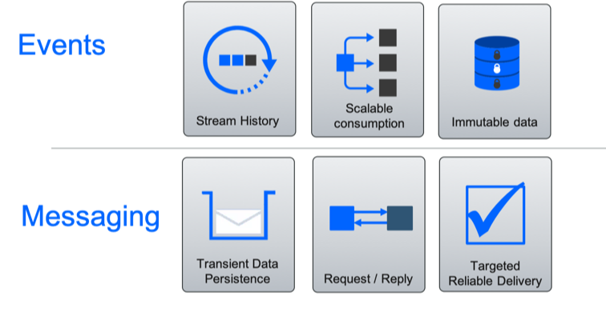

Concepts
Events
Events are notifications of change of state. Notifications are issued, or published and interested parties can subscribe and take action on the events. Typically, the issuer of the notification has no knowledge of what action is taken and receives no corresponding feedback that the notification has been processed.
- Events are notifications of change of state.
- Typically, events represent the change of state of something of interest to the business.
- Events are records of something that has happened.
- Events can't be changed, that is, they are immutable. (We can't change something that has happened in the past).
Event streams
An event stream is a continuous unbounded series of events.
- The start of the stream may have occurred before we started to process the stream.
- The end of the stream is at some unknown point in the future.
- Events are ordered by the point in time at which each event occurred.
When developing event driven solutions, you will typically see two types of event streams:
- Event streams whose events are defined and published into a stream as part of a solution.
- Event streams that connect to a real-time event stream, for example from an IOT device, a voice stream from a telephone system, a video stream, or ship or plane locations from global positioning systems.
Command
A command, is an instruction to do something. Typically, commands are directed to a particular consumer. The consumer runs the required command or process, and passes back a confirmation to the issuer stating that the command has been processed.
Events and Messages
There is a long history of messaging in IT systems. You can easily see an event driven solution and events in the context of messaging systems and messages. However, there are different characteristics that are worth considering:
- Messaging: Messages transport a payload and messages are persisted until consumed. Message consumers are typically directly targeted and related to the producer who cares that the message has been delivered and processed.
- Events: Events are persisted as a replayable stream history. Event consumers are not tied to the producer. An event is a record of something that has happened and so can't be changed. (You can't change history.)

Loose coupling
Loose coupling is one of the main benefits of event-driven processing. It allows event producers to emit events without any knowledge about who is going to consume those events. Likewise, event consumers don't need to be aware of the event emitters. Because of this, event consuming modules and event producer modules can be implemented in different languages or use technologies that are different and appropriate for specific jobs. Loosely coupled modules are better suited to evolve independently and, when implemented correctly, result in a significant decrease in system complexity.
Loose coupling, however, does not mean “no coupling”. An event consumer consumes events that are useful in achieving its goals and in doing so establishes what data it needs and the type and format of that data. The event producer emits events that it hopes are understood and useful to consumers thus establishing an implicit contract with potential consumers. For example, an event notification in XML format must conform to a certain schema that must be known by both the consumer and the producer. One of the most important things that you can do to reduce coupling in an event-driven system is to reduce the number of distinct event types that flow between modules. To do this you must pay attention to the cohesiveness of those modules.
Cohesion
Cohesion is the degree to which related things are encapsulated together in the same software module. For the purposes of this EDA discussion, a module is defined as an independently deployable software unit that has high cohesion. Cohesion is strongly related to coupling in the sense that a highly cohesive module communicates less with other modules, thus reducing the number of events most importantly, the number of event types in the system. The less frequently modules interact with each other, the less coupled they are. Achieving cohesion in software while optimizing module size for flexibility and adaptability is difficult, but something to strive for. Designing for cohesion starts with a holistic understanding of the problem domain and good analysis work. Sometimes it must also take into account the constraints of the supporting software environment. Monolithic implementations and implementations that are excessively fine-grained must be avoided.